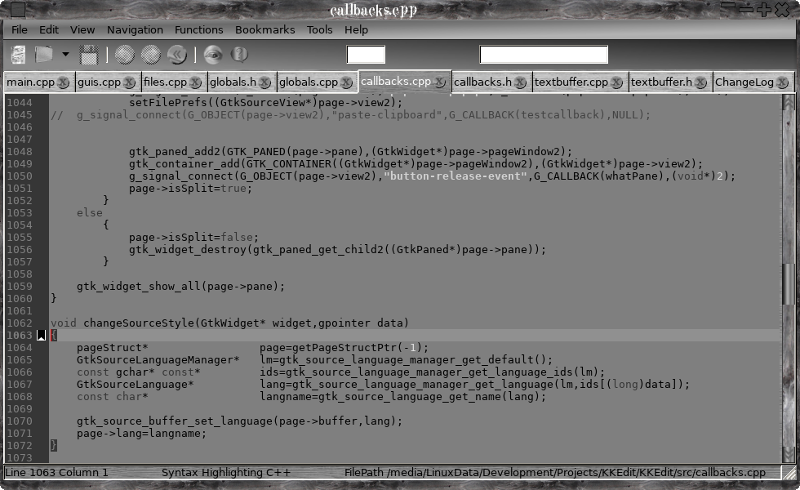

Source code text editor

Why another text editor?
Simple, I didn't like any of the others they were all too flat ( sorry wrong sketch! ), anyway having used gedit for years it was getting increasingly difficult to keep it compiling without loads of gnome dependencies, looking around linux text editors seem to be VERY simple (leafpad) stupidly complex (GVim,Bluefish), trying to be all things to all people.
One of the best text editors I have used is BBEdit but that is only available on the mac, so I bit the bullet and decided to write my own with the best bits from BBEdit ( the name KKEdit is a tip of the hat to BBEdit ), gedit and leafpad. A simple uncluttered interface, no major dependencies, with just the features I use all the time, and TA DAH! KKEdit.
What it's not!
KKEdit is NOT a word processor or a web page editor, it is NOT and IDE! It won't right code for you, it wont insist on inserting brackets ( REALLY annoying! ), it wont force you to use any particular style, it doesn't need you to break all your fingers trying to hit weird and wonderful key combo's and it is not tied to one particular distro, oh yes and it won't cost you a penny!
What it is and does
KKEdit is a deceptivly simple text editor with syntax colouring.
It also has a function menu which allows you to jump instantly to a function definition, a navigation menu which will look in all open files for a function definition and then switch to that tab and go to the relevant line if it can't find a definition in any open files it will do a recursive search from the folder of the currently selected document, you can also highlight a #include directive and it will search for and try to open the file, include files surrounded by <> will be looked for in /usr/include, files surrounded by "" will be looked for in the current folder.
External tools can be added either globally or locally and when run can either replace the currently select text with their ouptut, replace all the files text, be run in a terminal or you can choose to ignore the output form the script, BASH, python and perl can be used for the script language or any interpretor that uses '#' as a comment marker.
A number of simple demo scripts are included in the folder "demotoools" ( good name eh ).
You can drag and drop a file onto the main toolbar/menu to open a file.
Session can be saved and reloaded.
Any amount of bookmarks can be added anywhere, selecting a bookmark from the menu will switch to that tab and move to the appropriate line.
Manual
Simple, I didn't like any of the others they were all too flat ( sorry wrong sketch! ), anyway having used gedit for years it was getting increasingly difficult to keep it compiling without loads of gnome dependencies, looking around linux text editors seem to be VERY simple (leafpad) stupidly complex (GVim,Bluefish), trying to be all things to all people.
One of the best text editors I have used is BBEdit but that is only available on the mac, so I bit the bullet and decided to write my own with the best bits from BBEdit ( the name KKEdit is a tip of the hat to BBEdit ), gedit and leafpad. A simple uncluttered interface, no major dependencies, with just the features I use all the time, and TA DAH! KKEdit.
What it's not!
KKEdit is NOT a word processor or a web page editor, it is NOT and IDE! It won't right code for you, it wont insist on inserting brackets ( REALLY annoying! ), it wont force you to use any particular style, it doesn't need you to break all your fingers trying to hit weird and wonderful key combo's and it is not tied to one particular distro, oh yes and it won't cost you a penny!
What it is and does
KKEdit is a deceptivly simple text editor with syntax colouring.
It also has a function menu which allows you to jump instantly to a function definition, a navigation menu which will look in all open files for a function definition and then switch to that tab and go to the relevant line if it can't find a definition in any open files it will do a recursive search from the folder of the currently selected document, you can also highlight a #include directive and it will search for and try to open the file, include files surrounded by <> will be looked for in /usr/include, files surrounded by "" will be looked for in the current folder.
External tools can be added either globally or locally and when run can either replace the currently select text with their ouptut, replace all the files text, be run in a terminal or you can choose to ignore the output form the script, BASH, python and perl can be used for the script language or any interpretor that uses '#' as a comment marker.
A number of simple demo scripts are included in the folder "demotoools" ( good name eh ).
You can drag and drop a file onto the main toolbar/menu to open a file.
Session can be saved and reloaded.
Any amount of bookmarks can be added anywhere, selecting a bookmark from the menu will switch to that tab and move to the appropriate line.
Manual
Navigation Menu
Functions Menu
Tools Menu
Preferences
Get It And Build It
TO BE DONE - PLEASE READ
Navigation Menu
The Navigation menu has two sub-menus - Go To Definition and Open Include File.
To go where a function etc is defined, select it and choose 'Go To Definition' KKEdit will then look in open files for the definition and switch to that page and highlight the appropriate line like so:


As you can see as the definition was not in an open file KKEdit looks for the definition recursively starting from the folder where the file was opened from and if found opening the file and selecting the line with the definition.
Functions Menu
The Functions menu contains a list of all defined functions, variables and defines that are visible in this file, to jump to the appropriate function definition just select it from the menu like so:

The Functions menu will be updated after saving a file or switching tabs.
Tools Menu
The Tools menu allow you to run an external script ie to open a terminal with the working directory set to the folder where the current file is open:

External tools can either be added globally to /usr/share/KKEdit/tools (if you have installed with --prefix=/usr) or locally in ~/.KKEdit/tools.
External tools are passed three environment variables:
KKEDIT_CURRENTFILE - Path to current document.
KKEDIT_CURRENTDIR - Directory of current document.
KKEDIT_DATADIR - Directory of global folder ( eg /usr/share/KKEdit ).
More variables may be defined later.
External tools are just script files with the second line beginning with a '#' like so:

Where the first number can be 0 to ignore the output from the script, 1 to replace the currently selected text (or insert at the cursor) and 2 to replace the entire contents of the current document with the output from the script.
The second number if set to 1 will run the script in a terminal, you must have an app called 'terminal' somewhere in your path, in Xfce4 for instance 'terminal' is a symlink to '/usr/bin/terminal'
The final bit is the name that appears in the 'Tools' menu of KKEdit.
Preferences

The Prefs file is created ~/.KKEdit/kkedit.rc and will be created/recreated when quitting KKEdit.
Preferences should be set from 'Edit->Preferences'
You can set the command to run an external tool in a terminal from here.
Get it here!
KKEdit
Dependencies
A reasonably new Xorg and desktop.
gtk-2.24.13.
gtksourceview-2.11.1.
ctags.
xdg-utils-1.1.0.
Autotools.
If you use a source based distro like LFS or Slackware you should have all(most) of these installed, if you use a prepackaged distro like debian and you have not compiled from source before you may have to install some development packages ie for debian ( this is from memory ) the build-essential package and the -dev packages for gtk2 and
gtksourceview, check your distros documentation and you distros forums for general help on compiling software.
Building
Unpack the tarball,cd into the KKEdit folder and run:
./autogen.sh --prefix=/usr
make
sudo make install
TO BE DONE
1) Make find/replace MUCH more versatile with
2) Set up a proper GUI to build an external tool script.
3)
4)
5) Check for file changing on disk and issue alert.
6) A decent icon.
7)
8) Improve this help file.